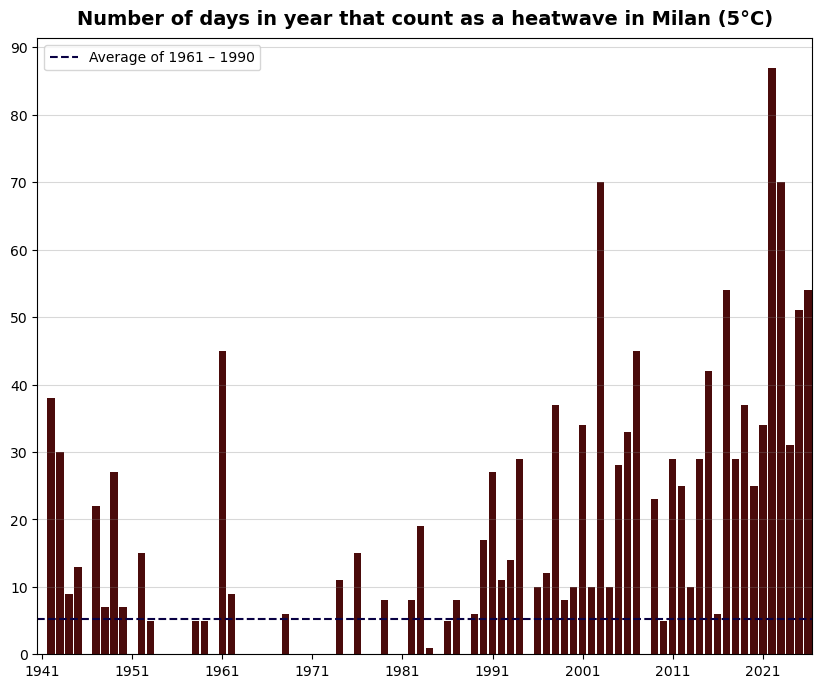
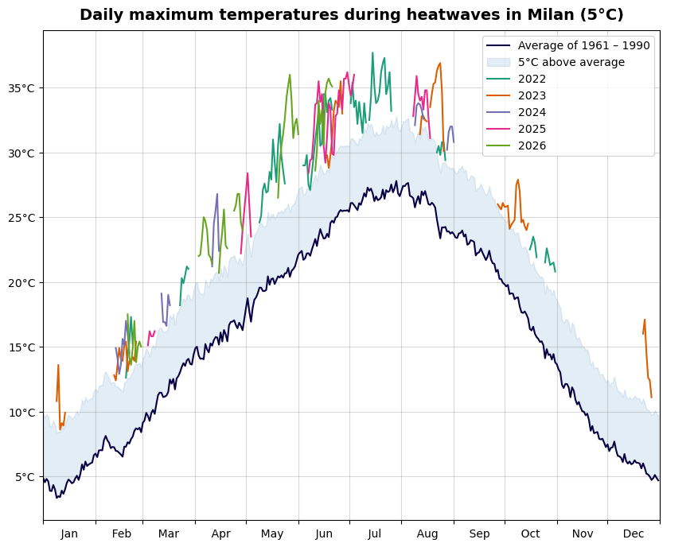
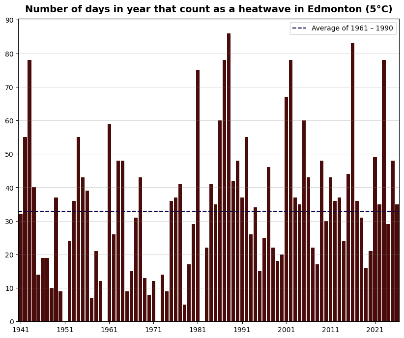
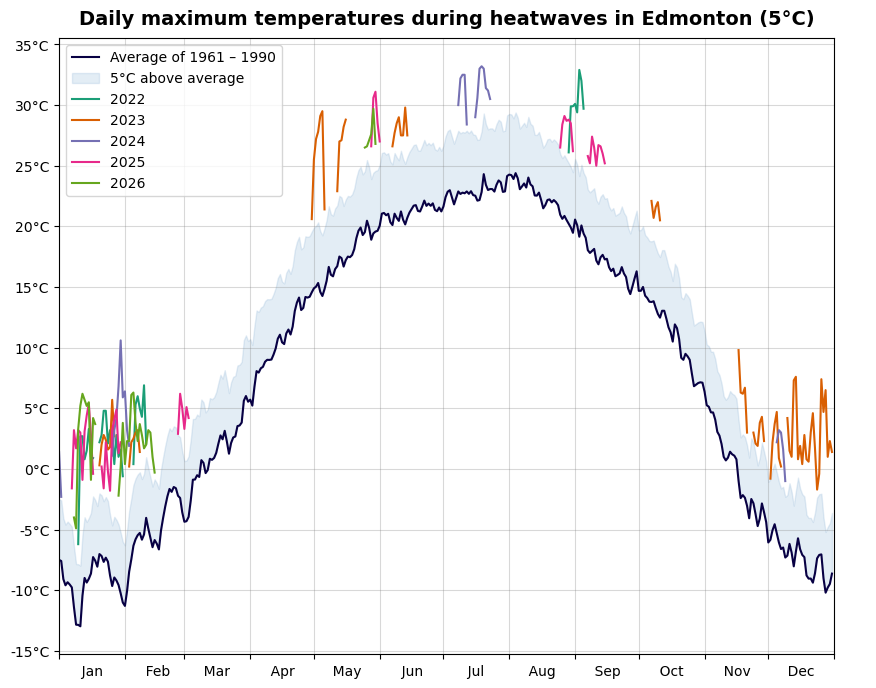
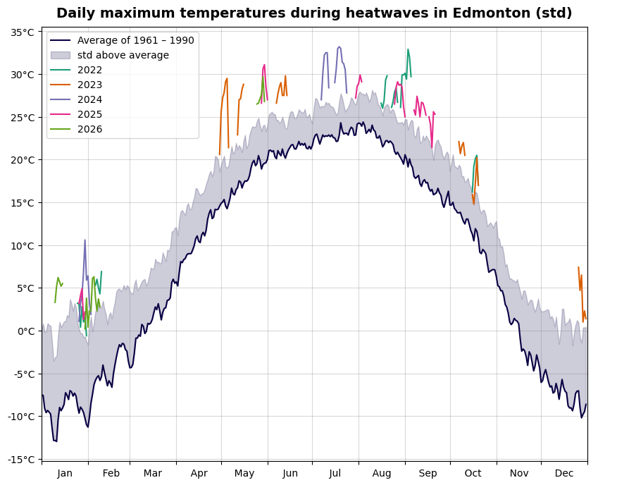
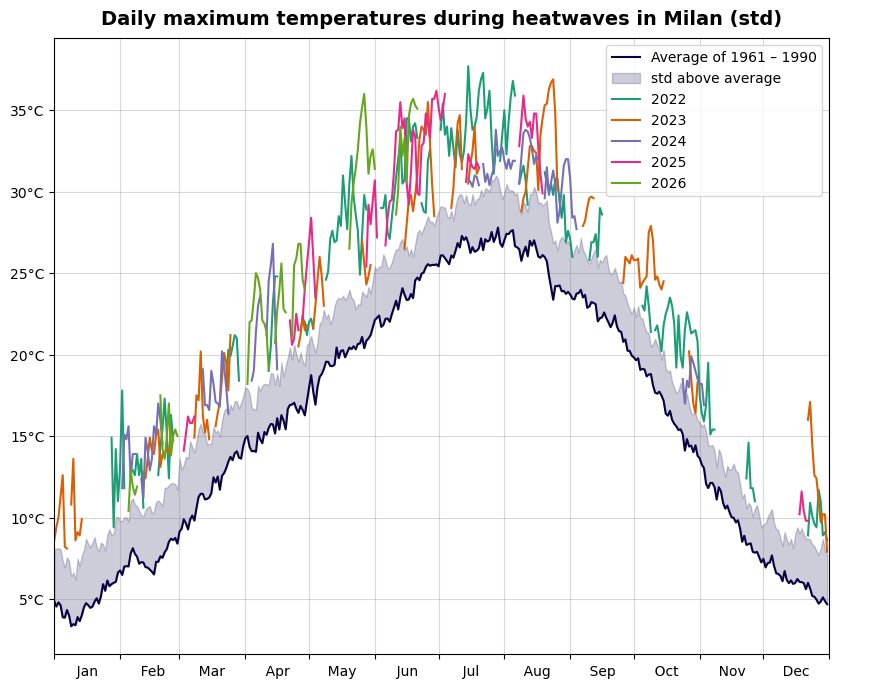
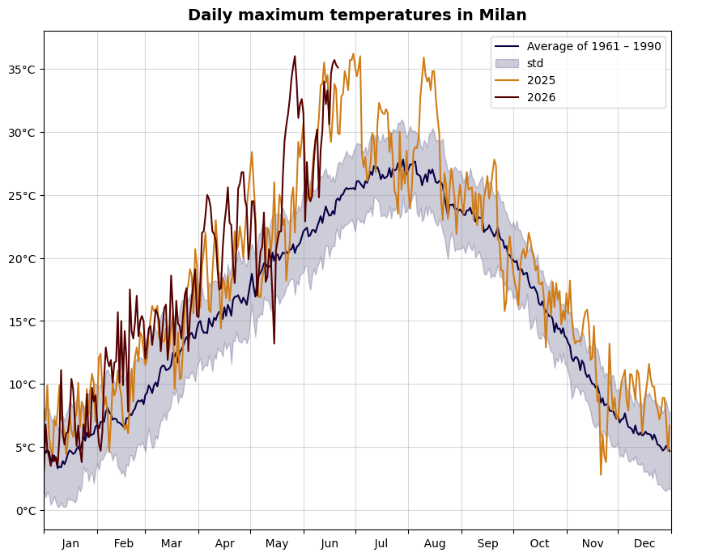
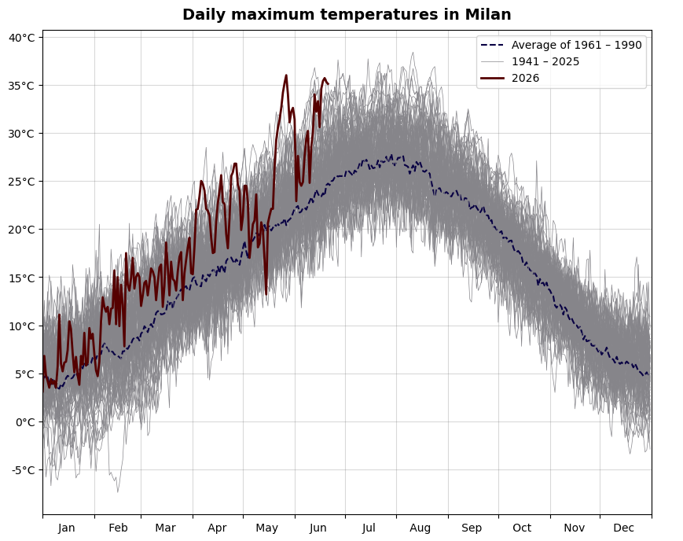
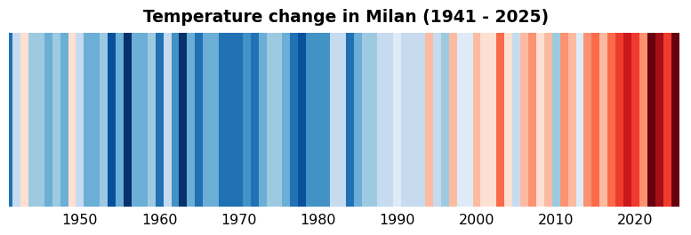

This is a cross-over between a portfolio project and a blog post. I used data from open-meteo.com. You can also review the Jupyter notebook with my code here.
It is only June and we already have a second heatwave of this year. Since this is only my second summer in Milan (and in Italy in general), I want to know how common these high temperatures are here.
Heatwaves in Milan
One of the main topics in all European media these days is the current heatwave. But to be able to analyze former heatwaves (and also just because I am a mathematician), I need to know what is the definition of a heatwave. However, it seems like there is no unique definition. One I found that seems more general and hence applicable for any place around the world, is the following one (from Wikipedia):
"A heatwave occurs when the daily maximum temperature of more than five consecutive days exceeds the average maximum temperature by 5 °C, the normal period being 1961–1990."
So, using this definition, let us look at the number of days in each year that count as a part of a heatwave.

We can see the trend of increasing number of heatwave days, with the last decade being particularly hot. Also, this year (the data ends on 21.06.2026), we have already had more heatwave days than during the entire last year.
Let's also see when during the year these heatwaves appear and what kind of temperatures the inhabitants of Milan experience.

This plot shows all the days since 01.01.2022 that classified as heatwave days, and what was the maximum temperature of that day. It tells us that this year has so far not been as bad (or as hot) as the year 2022. That is the year that shows the highest number of heatwave days in the previous plot.
Heatwaves in Edmonton
The idea behind choosing this particular definition of a heatwave was that it seems to be general and can be applied to any part of the world. Let's test it and plot the same graphs for Edmonton. (If you wonder why Edmonton: out of all the places I have lived, Edmonton has climate that differs from the Milanese one the most.)

Edmonton has more constant number of heatwave days per year than Milan. That should not be surprising: it is well-known that the global warming has stronger effects on temperatures in Europe than in continental Canada.

Notice that in Edmonton, most of the "heatwaves" occur during the winter! In my experience, the temperatures in winter are very variable and can be anywhere between -30°C and 0°C. Of course, this is just my personal experience from one year I lived in Edmonton, so it would be worth a separate analysis. However, 5°C or more above average is probably nothing unusual.
Changing the definition of a heatwave
Can we improve the definition of a heatwave? As we noticed by applying our definition to Milan and Edmonton, it does not take into account how variable the temperature is (and always has been). Let's try to take that into account and exchange the 5°C for standard deviation.

This definition indeed decreased the number of "heatwaves" in winter. If we compare Fig. 5 with Fig. 4, we can see that there is now indeed wider "padding" above the mean in winter. We can see that the standard deviation in winter is generally larger than in summer (which corresponds with my personal experience).
Let's apply this definition to Milan.

Oppose to Edmonton, the standard deviation remains fairly constant over the year. And, more importantly, it is less than 5°C. Thus, while we decreased the number of heatwaves in Edmonton, we increased it in Milan. I don't know if I like that, Milan was hot enough with the first definition :)
I think it is fair to say that neither of the tested definitions works perfectly for any place of the world. Maybe there is a better one that I overlooked. Or maybe it is the best to use localized definitions like "five days of maximum temperatures above 30°C that don't decrease below 25°C".
How hot it is in Milan?
Let's forget about heatwaves and just look at the maximum daily temperatures in Milan in the last two years. For comparison, we plot the average of the maximum temperatures over the reference period 1961–1990 (the same as we used for the heatwaves).

Spaghetti alla Milanese
Another way how to compare current and past temperatures is to depict the measurements for all previous years, and then put the average of the reference period and the current year visibly on top. This is nicknamed the "Copernicus spaghetti graph". It was recommended to me by Claude when I asked it for a small data analysis project related to the current temperatures, so even though I don't think it is the most informative plot, I feel obliged to include it here.

Warming stripes
To wrap it up, I also recreated the famous warming stripes for Milan. The credit for the code goes to towardsdatascience.com (this is the only plot that I did not code myself).
